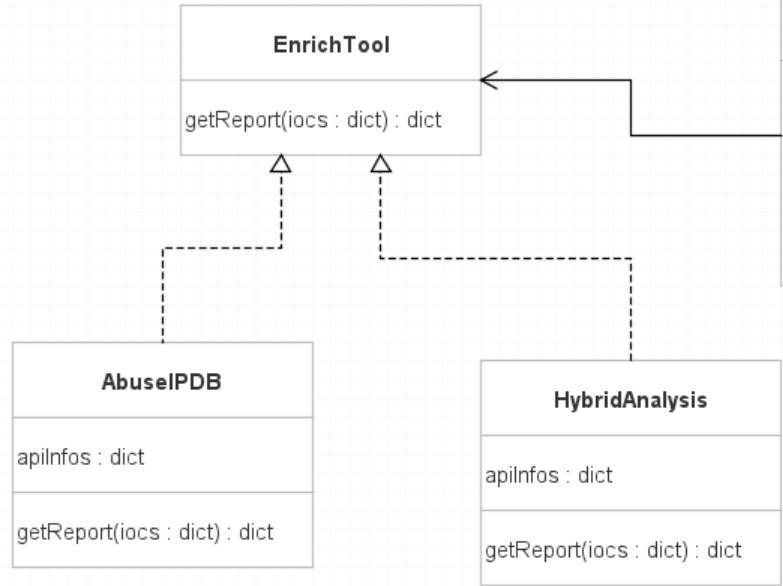

EnrichTool¶
{kind=link}
L’interface EnrichTool est une classe “observable” servant à l’intégration des APIs de scan d’IOCs. Chaque classe qui implémente EnrichTool doit contenir une méthode getReport(iocs) renvoyant un dictionnaire sous cette forme :
{"EnrichToolName" : "{Name}", "ToolMessage" : "{field1} : {value1}\n{field2} : {value2}\n..et ainsi de suite"}
Un template de ce type de dictionnaire est disponible dans la constante EnrichTool.BASE_REPORT.
Exemple d’implémentation d’EnrichTool (AbuseIPDB) :
from lib.EnrichTool import EnrichTool
import requests as req
class AbuseIPDB(EnrichTool):
BASE_URL = {
"ip" : "https://api.abuseipdb.com/api/v2/check"
}
def __init__(self, apiKey):
self.apiInfos = {"apiKey" : apiKey}
def getReport(self, iocs):
# Setup du rapport
result = EnrichTool.BASE_REPORT.copy()
result["EnrichToolName"] = "AbuseIPDB"
result["ToolMessage"] = ""
# Traitement des IOCs
try:
ip = iocs["ip"]
url = f"{AbuseIPDB.BASE_URL["ip"]}?ipAddress={ip}&maxAgeInDays=30&verbose&key={self.apiInfos["apiKey"]}"
response = req.get(url)
value = response.json()["data"]["totalReports"]
result["ToolMessage"] += f"totalReports : {value}\n"
except:
print(f"WARNING : ip report not handleled on {result["EnrichToolName"]}")
return result
Globalement, vous pouvez faire ce que vous voulez dans votre EnrichTool, tant que la méthode getReport retourne un dictionnaire de type EnrichTool.BASE_REPORT avec un dictionnaire d’iocs en paramètre.
Le dictionnaire “iocs” passé en paramètres est un dictionnaire de cette forme :
{
"ip" : "0.0.0.0",
"url" : "http://.../...",
"mail" : "mail@domaine.ext",
"hash" : "signature SHA1-SHA256..."
}